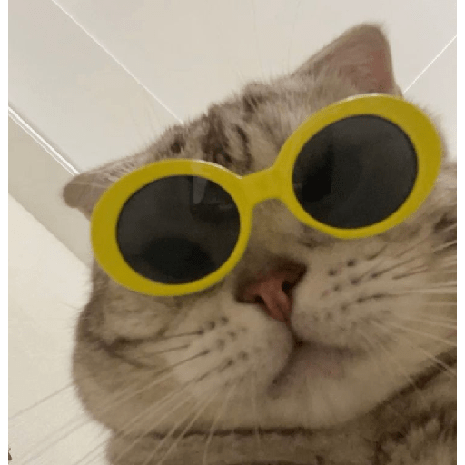

Datos Confidenciales:
- Nombre completo: Natalia Belen S. Pacienzia
- Edad: casi 31
- Nacionalidad: Made in Argentina
- Localidad: Prestigioso conurbano de Buenos Aires
- Estado Civil: Unida de hecho con el mejor compita
- Hijxs: 5 gatos y 2 perras
- Hijxs humanes: INVICTA
Experiencias:
- Nacer
- Sobrevivir
- Conocer al amor
- Trabajar en lugares de mala muerte
- Atravesar la pandemia
- Renunciar
- Dejar una carrera que no avanzaba
- Buscar nuevos rumbos
- Viajar por la hermosa Argentina
- Aprender Lenguajes de Programación
- Ser Campeones del mundo
- SEGUIR sobreviviendo
Otras rarezas para agregar:
Me encanta escuchar música de TODO tipo, pero cuando quiero relajarme en algún momento del día, pongo este video en YouTube:
Chill VibesMe gustan los gatitos y viajar. AMO MI PAÍS.
Claramente no es mi gatito, es uno de internet. Yo tengo 5, así que es imposible poner una foto de todos. Pero aquí va una foto real de un paisaje hermoso que retraté en Villa Traful, Neuquén:
Y un videito en honor a FAMAF del Diquesito, en Tanti. Es de hace unos años, por eso la calidad. Amo Córdoba, espero volver pronto: